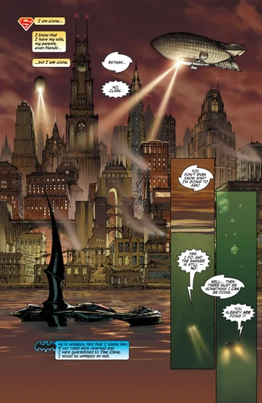
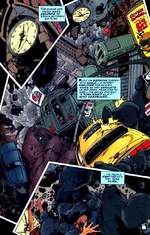

Welcome to Gotham City Hall's website.
Here you will be able to submit complaints, view meetings.
If you have a login please login to your account.
 The origins of Gotham City are somewhat shrouded in mystery. Many millennia ago, an evil warlock was buried alive beneath what would one day become the central island of Gotham. It is alleged that while the warlock laid in a state of torpor, his evil essence seeped into the soil, poisoning the ground with his dark, corrupt touch. By the warlock's own reasoning, he claims that he fathered the modern spirit of Gotham City and has even taken to calling himself Doctor Gotham
 Shortly following Ra's al Ghul's attempt to contaminate Gotham with a deadly virus, the city suffered an magnitude 7.6 earthquake in an event commonly referred to as the "Cataclysm". With hopes for rehabilitating the broken city, the United States government declared it a "No Man's Land," which effectively quarantined the entire island city. Eventually, thanks in no small part to the financial and political machinations of Lex Luthor — dipping his hands, as ever, in both legitimate and illegal means to achieve his goals — Gotham City was released and rebuilt, and rejoined the United States.